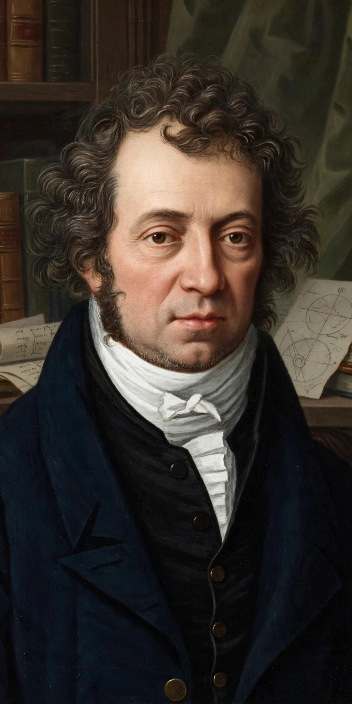

André-Marie Ampère (20 January 1775 – 10 June 1836) was a French physicist and mathematician who was one of the founders of the science of classical electromagnetism, which he referred to as "electrodynamics". The SI unit of electric current, the ampere, is named after him, as is Ampère's force law and Ampère's circuital law.
| André-Marie Ampère | |
|---|---|
| Born | 20 January 1775, Lyon, France |
| Died | 10 June 1836 (aged 61), Marseille, France |
| Fields | Physics, mathematics |
| Known for | Ampère's force law; Ampère's circuital law; electrodynamics |
Ampère was born in Lyon, the son of a prosperous merchant. Largely self-educated in his father's library, he became a tutor and then professor of mathematics and physics, holding posts at Bourg-en-Bresse, the École Polytechnique in Paris, and the Collège de France. His first wife died in 1803, a loss that affected him deeply; he recorded his grief in his journal.
Within weeks of hearing of Ørsted's 1820 discovery that a current deflects a compass needle, Ampère showed that two parallel wires carrying currents attract or repel each other depending on the currents' directions. He developed a mathematical theory of the forces between current elements and published his masterwork, Memoir on the Mathematical Theory of Electrodynamic Phenomena, Uniquely Deduced from Experience, in 1826. He also proposed that magnetism arises from tiny circulating currents — an early anticipation of the modern picture.
Ampère's name is one of the 72 inscribed on the Eiffel Tower. The SI unit of current was named the ampere in his honour at the 1881 International Electrical Congress.
André-Marie Ampère — recreated from memory.